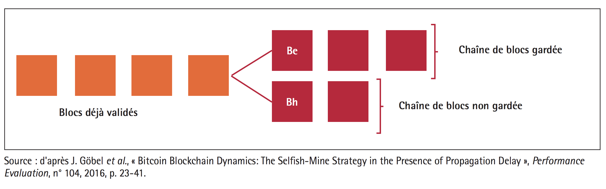

What about the blockchain security?
The blockchain's security guarantees:
There is no safe technology as safety and security are an ideal, not an absolute. But it is possible to approach this ideal, and we can consider that the blockchain meets these requirements insofar as it ensures the following points:
Availability: As data is distributed and decentralized, it is available as long as a node is able to transmit the register.
Integrity: the consensus mechanism is designed to allow information to be integrated and retained without altering it. The prerequisite for this provision is that a sufficient number of nodes are connected to the network and that the conditions for a 51% attack are not met.
Confidentiality: Confidentiality is a complex issue regarding the blockchain since the data are publicly available to ensure transparency.
Nevertheless, this confidentiality can be made possible by the implementation of a system of proof with zero disclosure of knowledge. Knowledgeless protocols allow the transfer of resources through a distributed network, peer-to-peer blockchain, in complete confidentiality. In regular block chain transactions, when an asset is sent from one party to another, the details of that transaction are visible to all other parties in the network. In an unconscious transaction, however, the other parties do not know that a valid transaction has occurred, but no information on the sender, recipient, asset class and quantity is disclosed. Voir Gestion de l'identification et confidentialité
Traceability: Because it is based on a stack of cryptographic blocks, the blockchain makes it possible to record all transactions and go back to block zero, ensuring the best traceability.
Authentication: To ensure the correct identity of a transaction, the issuer signs it with his private key, which "until it is known, ensures the veracity of the transaction".
Non-repudiation and imputation: Through consensus-based validation, the blockchain natively allows data non-repudiation. As for imputation, each minor certifying a transaction is authenticated on the network, so it is possible to identify and disqualify an offending minor.
Security threats threatening the blockchain:
According to Patricia Egger and Dusko Karaklajic in The Security of the Blockchain, threats to the emerging ecosystem are posed by the immaturity and complexity of the technology.
Indeed, the many consensus algorithms available, the blockchain types and the underlying complex cryptographic protocols make the technology difficult to understand.
The lack of standards and regulations on blockchain technology is also a risk. These legal loopholes are fertile ground for piracy and fraudulent manipulation, making technology still unreliable for serious use.
The most important risk remains the belief in absolute security around the blockchain although it is based on reliable and proven cryptographic mechanisms. This security will never be complete by nature: cryptographic protocols have their limits and global security also integrates peripheral elements, so the human risk is always present. In this last point, the blockchain provides a new way of processing certain data but does not free us from the traditional approaches to information system security.
In addition, the blockchain is sensitive to particular attacks, such as the Golfinger attack.
51% attack or Goldfinger attack
A 51% attack targets blockchains based on proof of work and proof of stake.
The purpose of this attack is to prevent transaction validations and paralyze the network, or to manipulate the history to validate a transaction twice without the expense being effective.
The validation of blockchains is done through mining.
In order to guarantee themselves remuneration within the framework of a blockchain operating under the proof of work method, miners are formed in groups (or pools), in order to have more power and to pool costs. They then share the effort and the gains.
But the danger of a group with too much power is that it can make a 51% attack.
Indeed, one of the founding principles of the blockchain is that the calculation is distributed among all the nodes where the calculation is validated by the consensus method. Thus if a single individual introduces a miscalculation voluntarily or falsifiedly, the other miners will automatically disqualify his work and his block will remain orphaned and will never be integrated. Thus alone, he cannot harm.
When a group of minors has at least 51% of the calculation capacities, it becomes possible in theory to bypass the consensus mechanism and thus to impose fallacious blocks that will be added to the official register. So if a group becomes too powerful, it is able to define what information is legitimate within a blockchain.
'Double spending' example.
Assuming that a group has more than 51% of the total power, it can then fraudulently manipulate the registry called the double expense hack.
This hack consists of making transactions between two accounts. He debits from the first account to the second, and with the power to manipulate the blockchain, erases the transaction. To do this, do not include the transaction in the mined blocks, and wait until a blockchain longer than the current blockchain replaces it.
Once the transaction has been deleted from the distributed registry, the second account appears as never having been debited as long as the second account has received the sum. It is a creation of ex-nihilo currency of crypto-currency units.
Such an operation will quickly lead to a drop in the price of cryptomonnaise. The group carrying out fraudulent activities will then have to quickly convert its assets into a current currency such as the euro or the dollar, which will accelerate the fall in the price.
The operation is facilitated by automated means.
This attack is unthinkable on well-established blockchains such as Bitcoin, because of the cost of such an operation, at least such an approach is inaccessible to a private company, but not to a rogue state, which has the necessary budgets and may have as its motivation to disrupt a competing blockchain or causing disorder.
On the other hand, on blockchains with a low mining capacity (recent or small), this attack is easily possible.
In the latter case, a low computing power, which could be available to an average organization, would be sufficient to carry out the attack.
The newly created blockchains are therefore in an extremely vulnerable position.
51% attack objectives
Fraudulent records and disappearance of transactions:
In the context of a private blockchain, for example allowing the implementation of the vote or allowing food traceability, this would make it possible to falsify the information.
In the case of a cryptomonnaise, this allows for double spending, which both enriches and destabilizes the exchange rate.
Breaking the bond of trust:
Because of their decentralized operation, blockchains pose governance problems and are perceived as a threat by certain states or institutions. This is why disrupting the operation of these blockchains can alienate the trust of users towards the blockchain.
Resilience of blockchains to attack
The cryptocurrency system is designed to be resilient to 51% attacks, when such an attack is detected. A patch can be deployed and limits the damage caused by the attack.
Estimated costs of a 51% attack
The costs to carry out a 51% attack vary according to the scale of the blockchain targeted.
Concerning Bitcoin, various estimates were made by Jean-Paul Delahaye in L'attaque Goldfinger d'une blockchain.
Based on his calculations, the cost in May 2017 can be estimated at 878 million dollars.
In comparison, the budget of the French State is 400 billion euros per year, that of a government agency such as the NSA is 45 billion dollars.
The attack is therefore inaccessible to a normal institution.
Selfish miner strategy
The example of the selfish minor is explained in Les risques des blockchains, by Laurent Dehouck, Senior Lecturer in Management Sciences, ENS Rennes and Audrey Thomas, ENSAM.
When a transaction takes place, the minor who discovers the solution first has a Be block.
This block is supposed to be communicated to the other nodes in order to be integrated into the blockchain.
But this dishonest minor can keep this block secret and work immediately on the validation of the next block.
As soon as another "honest" miner validates a Bh block, he wants to broadcast it to the other nodes.
The dishonest minor will then broadcast his Be block. The network is thus in the presence of two blocks validated almost at the same time and temporarily stored on the blockchain.
Some nodes in the network will be aware of the Be block and others will be aware of the Bh block.
New blocks will then be added following Be and Bh.
For the dishonest minor, the advantage remains in the act of not disclosing the Be block. This gives it a strategic advantage over the rest of the network users in the search for the next solution, because each validated block is linked to the previous blocks.
The simultaneous creation of two blocks causes what is called a "bifurcation", so the containing chain will be preserved because the chain containing the Be block will be longer.
The dishonest miner disqualifies his competitors by making them work at a loss, their yields quickly collapsing.

Illustration d'une bifurcation
This type of strategy invites us to rethink the question of blockchain standardization and consensus techniques to protect against these harmful practices.